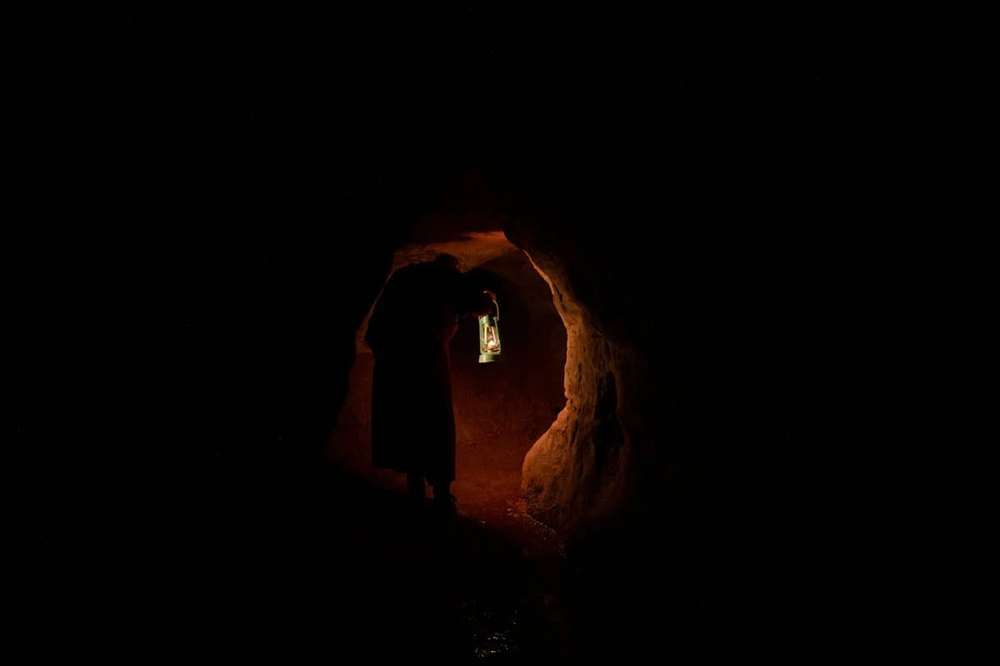

MEMENTO MORI
The Tunnels
The stone is replaced with the caverns of orange and brown, the dirt below you uneven and curved. The only life being the tendrils of roots that tangle around the stone. Each thick thread stretching into the shade and shadows around you.
Pressing onward you find another pit, this crypt is full of them. This one is different though, as the vines and roots of whatever vegetation had made them reach deep within. But before you can consider it, the beasties and their claws scratch against the surface of the crypt from behing. They've begun to catch up, and they are intent on feeding upon you.
Climb Down the Hole
